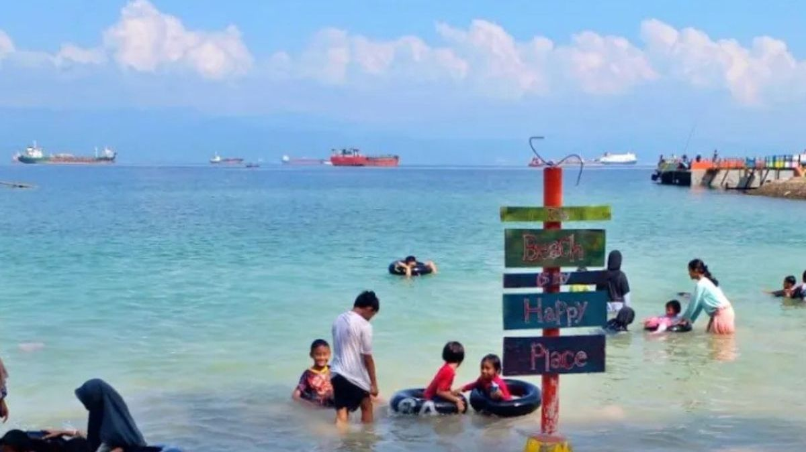

Pantai Tiska
Pantai Tiska (singkatan dari Pantai Taman Indah Srengsem Kereta Api) adalah destinasi pantai populer di Bandar Lampung yang menawarkan pemandangan laut, sunset indah berlatar pegunungan, ombak tenang, dan pasir putih, serta fasilitas lengkap seperti taman bermain anak, spot foto Instagramable, gazebo, dan area kuliner, menjadikannya tempat rekreasi keluarga yang terjangkau dan mudah diakses dekat pusat kota.
Harga Tiket
Rp 10.000 / Orang Dewasa
Rp 5.000 / Anak-anak
Fasilitas
Mushola, Mini Zoo, Toilet, Gazebo, Penginapan
Keunggulan
Panorama Sunset & Ombak Tenang
Galeri Foto Pantai

